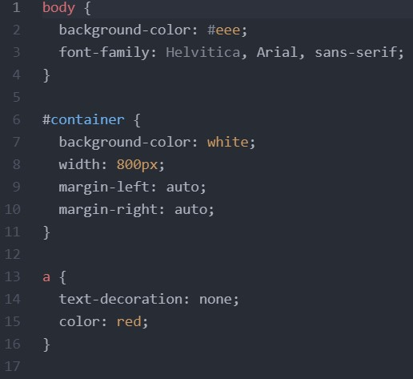
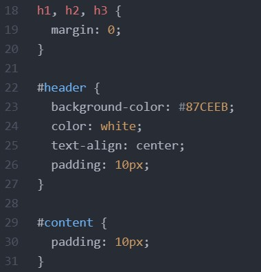

Introduction
The development of this website uses a combination of HTML, CSS, and Javascript. HTML is the standard markup language used to format the structure and content of websites. CSS on the other hand, is used to style a HTML document and describe the presentation of a website. Finally, Javascript is another coding language used to program more complex features and simple animations in the website. My knowledge about coding websites can be attributed to W3 Schools and some tutorial videos from Jake Wright, the latter whose instruction allowed me to create my first website. In this webpage, I would be going through the development history of my website and some of the specific features i added to it.
Basic Website
This is the first iteration of my website after watching the Jake Wright Tutorial videos and I mostly just followed his instructions exactly.
|  |  |
Current Website
After numerous modifications made to the basic website, the final product is ready! I switched to a bluish technology theme but the main structure of the website is the largely the same as the basic website that I first made. The only changes that I made to the website structure was the addition of a sub-header that indictaed which webpage the user was currently on and an animated, closable side navigation menu.

Animated Navigation Menu
The creation of the animated navigation menu was the only instance where I used javascript. Whilst it was easy to just copy and paste the feature from W3 schools, it took me some time to undertsand and modify the navigation menu. The animated nagigation menu consisted of the navigation menu itself, an open icon, and close button. The making of the menu can be split into 3 parts: HTML, CSS, and Javascript.
1. HTML
The majority of the HTML code for the navigation bar is similar to that of the basic website. The only difference here is extra the code needed to open and close the navigation menu. I will explain the code in two parts, the close button and menu icon.
- CLOSE BUTTON
javascript:void(0) is used to ensure that the when the link is pressed, it does not navigate to another page or refresh the page.
The class for the close button is created and the onclick function is used to execute a script to close the menu. - MENU ICON
Inside the span tag, & # 9 7 7 6 ; is used to create the menu icon.
The font size is defined and cursor:pointer indicates that the icon is a link.
Lastly, we see onclick again to execute the script needed to open the navigation menu.
2. CSS
In the CSS, I styled the container for the menu, the content and the close button. I will just be explaining the important bits below.
|
3. Javascript
The use of Javascript is to animate the side bar or to open and close it. First a script tag is used to embed Javascript or specify the use of it in a HTML document. Then I create two functions which i call openNav() & closeNav(). Inside them I write document.getElementById("Sidenav") which returns the Sidenav element from my CSS file and .style.width which determines the width of the navigation menu. And its done, the animated navigation menu can be activated anytime the icon is clicked.